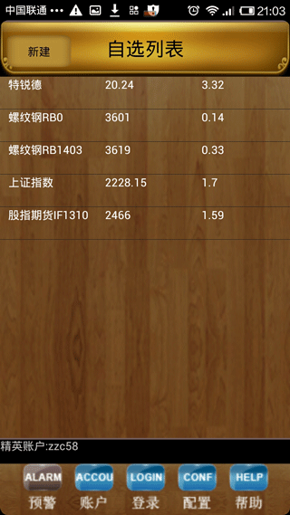
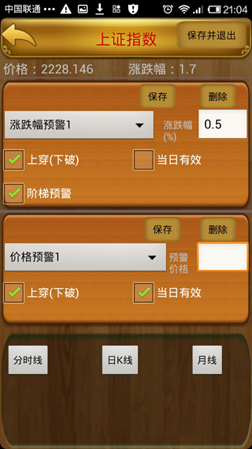
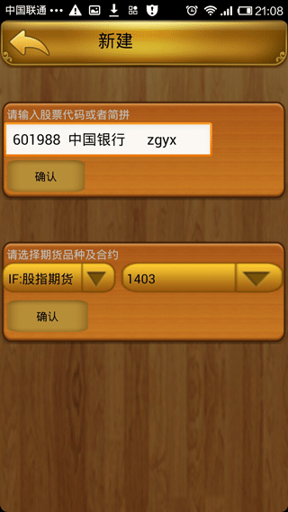
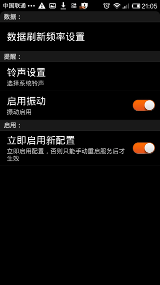
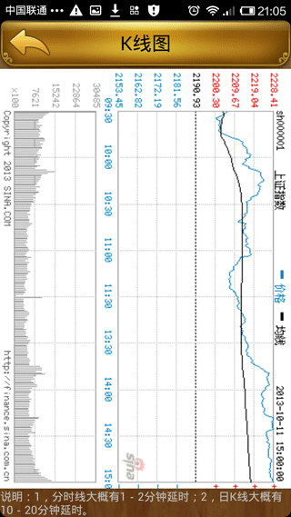
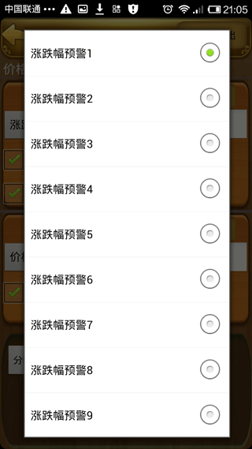
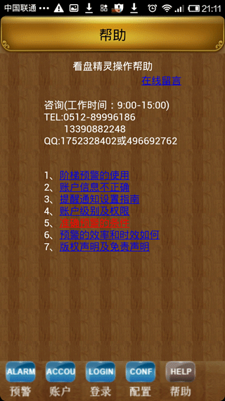

所属类别：财经(股票、期货)
更新时间：2013年10月1日
程序大小：2.1MB
系统要求：android 2.1以上
分 辨 率：240*320等
运行权限：1，允许程序访问网络；
版本： 2.0 下载
内容介绍：
这是不用盯盘的盯盘软件。
是把你从电脑看盘软件中解放出来的手机股票、期货（含股指期货）看盘预警软件。你再也不用时刻盯着电脑屏幕，不用担心你的自选股的异动，因为疏忽没有被留意。看盘精灵具有非常完备而强大的预警设置功能，每只股票可以设置5-10个预警项目，组成严密的预警组合。看盘精灵具有独创的阶梯预警功能，一键设定，股票涨跌尽在掌握。
你在炒股过程中是否会产生没来由的焦躁吗？不盯着电脑屏幕就会产生对于大盘以及个股涨跌的焦虑吗？你觉得盯盘太累吗？你觉得电脑端的股票预警实用吗，电脑端的股票软件包括股票预警，只能把人限制在电脑前，对于职业股民是个令人不快的限制，对于上班族股民而言更是无法使用，而手机的可移动性给我们带来了巨大的方便。
作为手机股票预警软件，只要你拥有一台手机，就可以把你从盯盘的重负中解脱出来,你再也不用时刻盯着电脑屏幕，不用担心你的自选股的异动没有被留意，任何股票价格、涨跌的异动都会根据你的设置自动提醒您，当然，你不需要被拘禁在电脑边，你可以到任何地方走走，不用时刻焦虑着自己的股票是否忽然急拉或急跌。
如果你是上班族，你根本没有盯盘的条件，现在只要一台手机就可以了，你不用不断地拿出手机查看股票价格，而是股票到达你设定的价格或涨跌幅的时候自动通知你。更加方便的是你完全可以在股票到达预警条件时设置振动（铃声为静音），不用担心老板或同事的关注。
看盘精灵软件具有非常完备而强大的预警设置功能，每只股票可以设置5-10个预警项目，组成严密的预警组合。看盘精灵具有独创的阶梯预警功能，一键设定，股票涨跌尽在掌握。看盘精灵软件的时间精确性、提醒及时性甚至超过专业交易软件。是你炒股的必备助手。
本软件目前只支持android平台。当前版本为v2.0
。
 
 
 